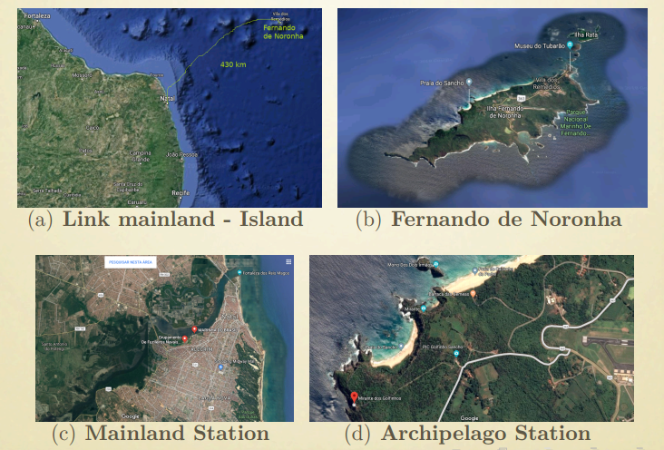
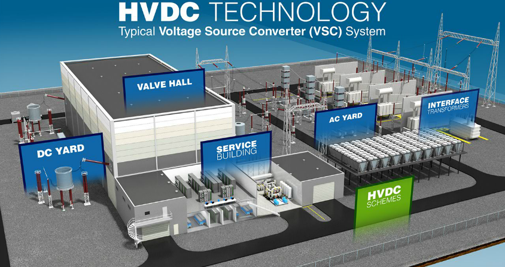

Integração do Arquipélago de Fernando de Noronha
Iniciativa Conjunta (Eduacação, Meio Ambiente, Energia, Ciência e Tecnologia, Defesa)
General Decílio de Medeiros Sales
Diretor de Ciência, Tecnologia e Inovação/ MD
Introdução
Iniciativa conjunta (Educação, Meio Ambiente, Minas e Energia, Ciência e Tecnologia,
Defesa, governo de Pernambuco) para integrar Fernando de Noronha ao continente
brasileiro por meio de cabos submarinos (energia e comunicações).
Objetivo estratégico
Programa para implementação de plataforma de desenvolvimento de tecnologia, envolvendo recentes avanços tecnológicos, onde projeto piloto fundamental será a conexão de Fernando de Noronha à cidade de Natal (no continente)
Parcerias iniciais
ANEEL, ANATEL, AGU, CHESF, CELPE, CENPES/PETROBRÁS, EPE, UFPE, UNICAMP, ...
Estrutura

Motivação
Transmissão de energia elétrica, gerada no continente (renovável), em substituição à conversão diesel-eletricidade (local)
Comunicações ópticas submarinas (tecnologia DWDM) como capacidade/benefício complementar
Sensoriamento distribuído (tecnologia disruptiva) em suporte a P & D realizada em Centros de Pesquisa e Universidades (nacionais e internacionais)
Link HVDC

Fernando de Noronha: DADOS DISPONÍVEIS
Eletricidade é predominatemente de origem termelétrica: Usina Termelétrica de Tubarão
A geração solar (Noronha I e Noronha II) é limitada: 10% da demanda atual no pico
A energia eólica está indisponível há vários anos, sujeita a restrições de natureza técnica e ambientais
As comunicações são de baixa qualidade (satelital)
Local ideal para o funcionamento de um centro internacional de pesquisas climáticas no Atlântico Sul
Papel relevante nas mudanças climáticas (como projeto piloto para o meio ambiente)
Ponto de partida para o desenvolvimento de futuras aplicações para áreas remotas, como Amazônia, Alaska, etc.
Premissas
Demanda de energia elétrica em FN é da ordem de 2.6 MW. Uma pequena parcela em torno de 10 MW, derivada do SIN (Sistema Interligado Nacional - 150 GW), pode ser transmitida até FN
Avanços recentes em novos materiais viabilizam a fabricação e instalação de cabos de potência mais leves em águas profundas
Avanços em dispositivos de estado sólido no campo da eletrônica de potência, tais como as novas famílias de IGBTs, viabilizaram a transmissão de energia elétrica por cabos submarinos, cobrindo longas distância, de forma eficiente, com destaque para a tecnologia VSC-HVDC
Avanços continuados nos sistemas de comunicações ópticas submarinos, tais como amplificação óptica, detecção coerente e tecnologia DWDM, associados à redução progressiva de custos com aumento de banda, sugerem a inclusão desta capacidade numa configuração standard sem repetição
Proposta Simplificada
Implementação de um sistema de distribuição elétrica, baseado na tecnologia VSC-HVDC, interligando Natal a FN por meio de cabos submarinos de potência
Implementação de um sistema de comunicações ópticas, por meio de cabo submarino de fibra óptica, conectando Natal a FN
Implementação de um sistema de sensoriamento submarino por meio de rede de sensores distribuídos, embutidos na infraestrutura de comunicações, como plataforma de pesquisa
Link HVDC
Diagrama em Blocos

Matriz Nacional de Energia Elétrica

Fontes Renováveis

Imagens Representativas

FN - Desequilíbrios
Patrimônio Natural da Humanidade (UNESCO)
O consumo de combustíveis fósseis é superior a 5 milhões de litros a cada ano
A emissão de dióxido de carbono é superior a 14 mil toneladas por ano
13 000 m2 de área permanentemente ocupada para atender a menos de 10% da demanda (na geração solar) - solução não escalável
As baterias de armazenamento de energia para as fontes intermitentes são caras, poluentes e não recicláveis economicamente, agora e em um futuro próximo, pelo que sabemos
Cabo DC
Requisitos Básicos
| Circuit technical data | Value |
|---|---|
| Cable outer diameter | 68 mm |
| Weight in air, approx. | 10.4 kg/m |
| Weight Submerged, approx | 6.6 kg/m |
| Min. bending radius | 1.2 m |
| Transmission capacity | 10 MW |
| Nominal voltage | 60 kV |
| Current (calculated to fulfil 10 MW requirement) | 200 A |
| Losses (@ 200 A) | 5.0 W/m |
| Voltage drop (@ 200 A) | 25.2 kV |
Cabo Óptico
Requisitos Básicos
| Circuit technical data | 1.9 mm | 3.6 mm |
|---|---|---|
| Cable outer diameter | 26 mm | 29 mm |
| Weight in air, approx. | 1.5 kg/m | 2.3 kg/m |
| Weight Submerged, approx | 1.0 kg/m | 1.6 kg/m |
| Min. bending radius | 0.95 m | 0.95 m |
| Attenuation | 0.17 dB/km | 0.17 dB/km |
Conversores
Requisitos Básicos
| Technical elements |
|---|
| Distribuition system network req. |
| Monopole configuration with earth/sea return |
| Stations: power between 10 and 20 MW, approx. |
| VSC-based HVDC power transmission |
| AC grid (mainland station): 69 kVAC, 60 Hz |
| AC grid (FN station): 13.8 kVAC, 60 Hz |
| Container-based installation |
| Available area (FN): 15m × 15m |
Estado-da-Arte

Partes e Parcelas

Modelagem para a implantação
Ações estratégicas coordenadas por um comitê de alto nível (MD, RNP, ICMBio, MCTIC, ANEEL)
Contratações realizadas pela RNP, com a parte técnica sendo conduzida conjuntamente pelas engenharias da RNP e do Ministério da Defesa
Governança: Modelo de gestão dinâmica de programas para garantir a sustentabilidade dos benefícios
Estratégia: trabalho em parceria, avançando continuamente, conforme captação de recursos
Necessidade de marco regulatório: ANEEL
Ações destacadas em 2018
Contratação dos serviços de survey
Elaboração de diversos Request for Information (RFI)
Realização de variados estudos comparativos e construção de parcerias estratégicas
Visitas técnicas: propostas de desenvolvimento conjunto
Entrega mais recente
Survey

Big Picture

Extensão

Considerações Finais
Não é um projeto do setor de energia elétrica
Primeiro sistema deste tipo no Brasil (tecnologia VSC-HVDC)
Cabo de potência ainda não construído
Cooperação/colaboração é requisito central (centro de gravidade)
Benefício considerável para o meio ambiente
Não envolve solução de prateleira
Extensão para áreas remotas
Muitíssimo Obrigado!